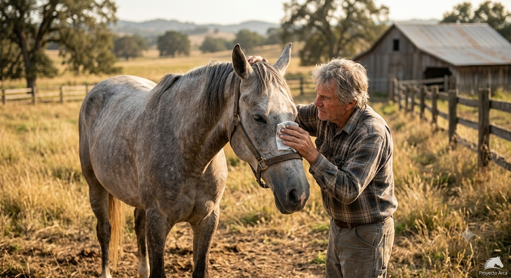
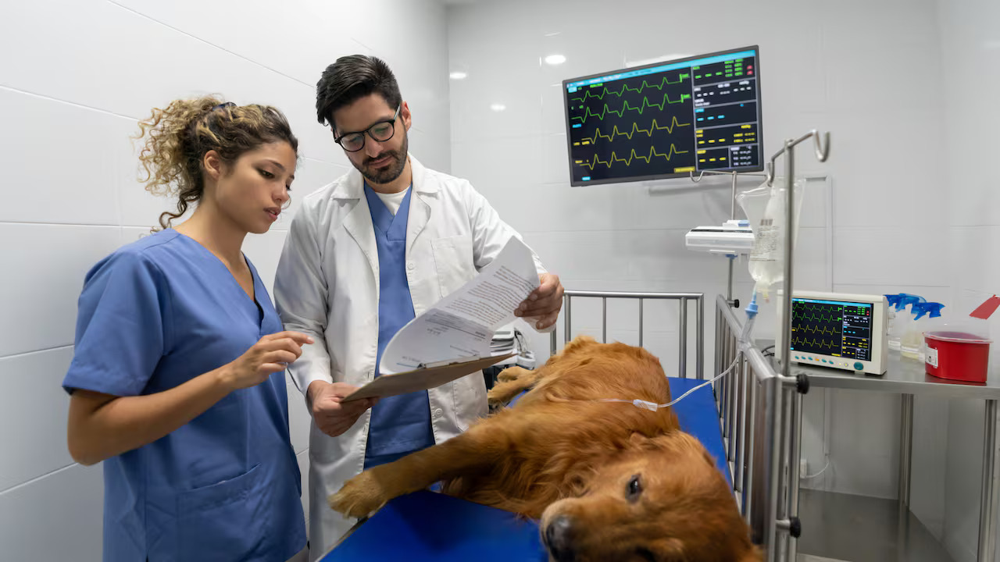
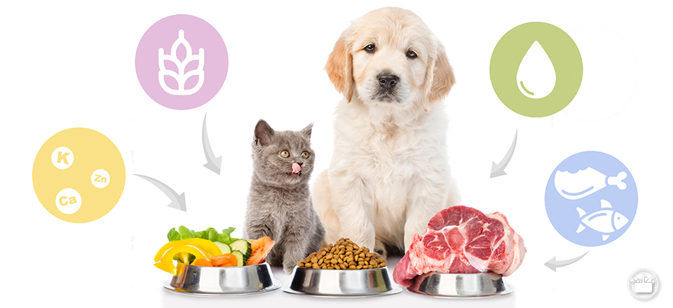
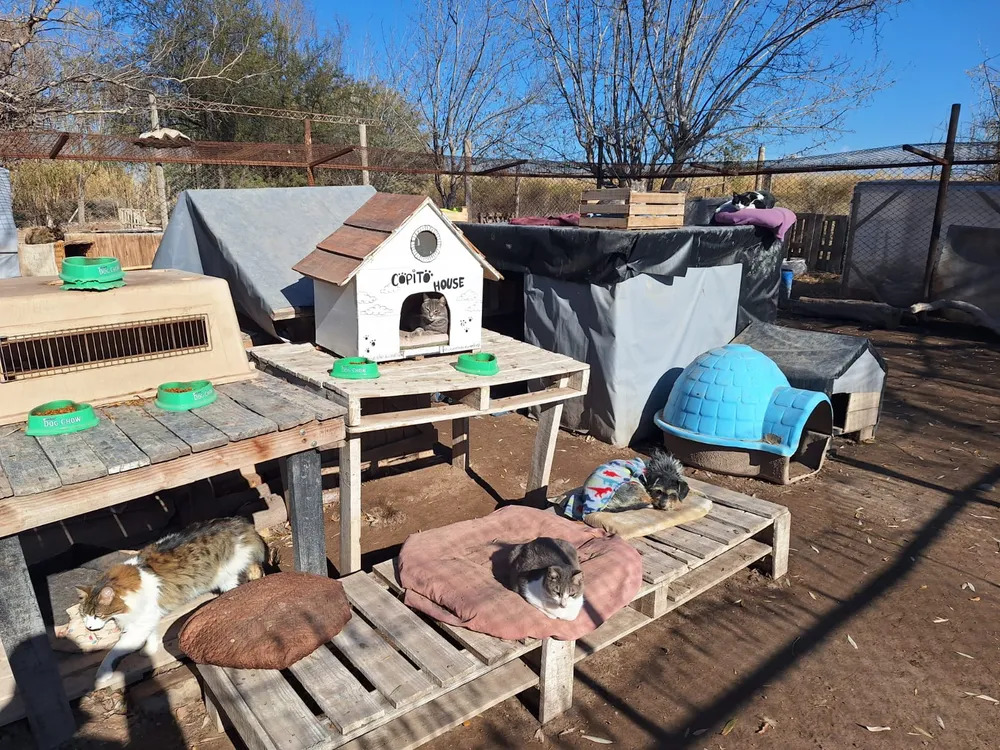

Nuestros Proyectos en Marcha
Conocé las iniciativas y campañas activas con las que transformamos el día a día de nuestros rescatados.
-
Nuestro objetivo es la salud felina y canina en barrios vulnerables. A través de clínicas móviles y el apoyo de veterinarios solidarios, realizamos vacunaciones gratuitas, concientizando sobre el cuidado responsable y la salud pública.

-
Rescatamos equinos cansados y heridos por el trabajo pesado en las calles. En nuestro predio reciben asistencia veterinaria especializada, descanso en boxes adecuados y la alimentación de alta calidad necesaria para que vuelvan a pastar en libertad y dignidad.
-
Trabajamos de forma constante en la ampliación de caniles, aislamiento térmico para el invierno y techado de patios para garantizar que todos los perros y gatos rescatados pasen su estadía en un ambiente seguro, seco y confortable mientras esperan su adopción.

-
Muchos de nuestros animales rescatados sufren de patologías crónicas o son muy ancianos, lo que dificulta su adopción rápida. A través de este programa, podés convertirte en el padrino o madrina de un residente específico del refugio, cubriendo mensualmente sus gastos de alimentación especial, medicación y brindándole un seguimiento lleno de amor hasta que encuentre un hogar definitivo.

-
El rescate de animales en situaciones críticas (accidentes, desnutrición severa o maltrato extremo) requiere una respuesta médica inmediata. Esta campaña permanente está destinada a financiar insumos quirúrgicos, análisis de laboratorio, internaciones de urgencia y la compra de prótesis o tratamientos de alta complejidad que salvan vidas todos los días.

-
Mantener a más de un centenar de animales con la panza llena y saludable es uno de nuestros mayores desafíos diarios. Con esta iniciativa gestionamos el acopio a gran escala de alimento balanceado para perros y gatos de todas las edades, además de fardos de alfalfa, avena y suplementos vitamínicos específicos para la óptima recuperación de los caballos rescatados.

-
Las bajas temperaturas son críticas para los animales que se encuentran recuperándose de cirugías o heridas. Lanzamos esta campaña anual para recolectar mantas, colchonetas, capas de abrigo para los equinos y materiales de aislamiento para los techos de los caniles. Tu aporte ayuda a mantener a cada rescatado calentito, seguro y protegido de las heladas.
